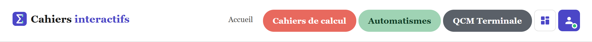
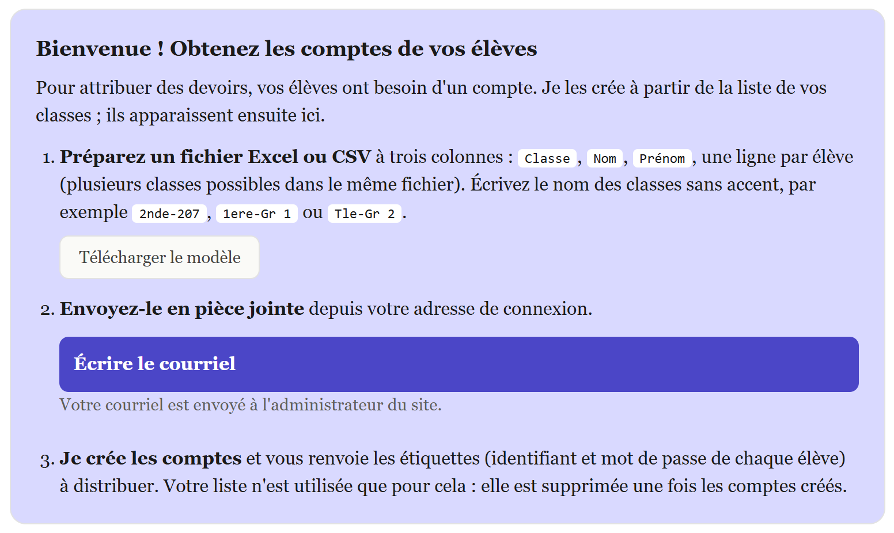
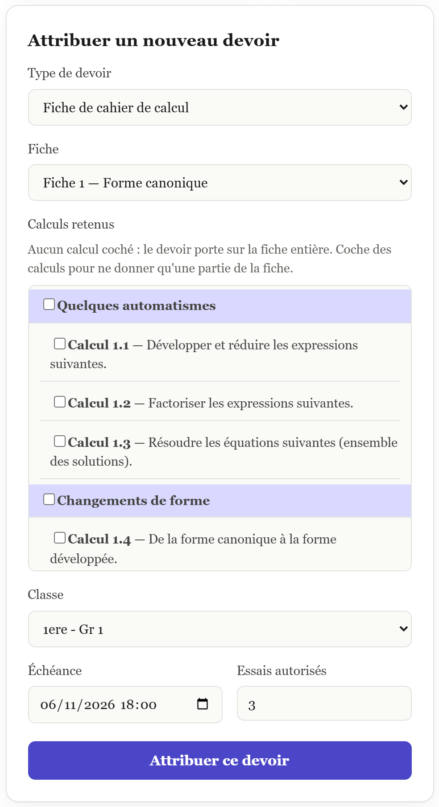
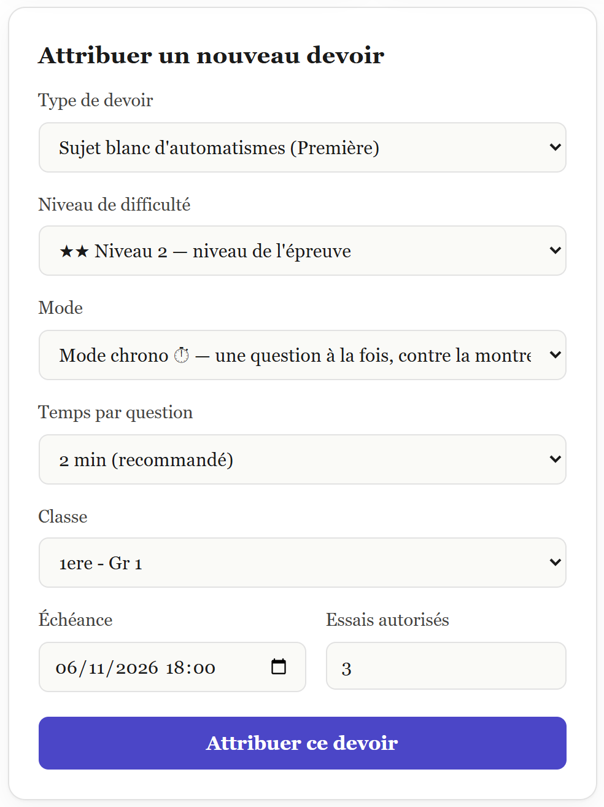
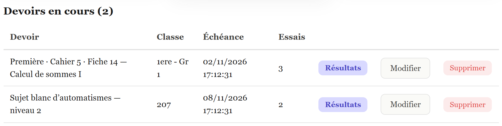
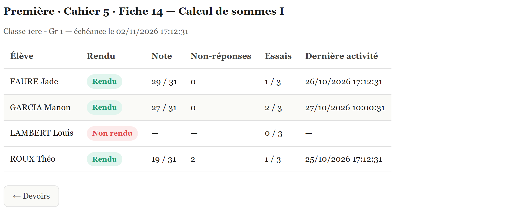

Obtenir les comptes de vos élèves, attribuer des devoirs et suivre leurs résultats : tout ce qu'il faut savoir pour utiliser le tableau de bord.
Recevoir son invitation, se connecter, obtenir les comptes de ses élèves.
Les cinq types de devoirs, la classe, l'échéance et le nombre d'essais.
Les résultats par élève, modifier ou supprimer un devoir.
Confidentialité, fin d'année, questions fréquentes.

Demandez à l'administrateur de vous renvoyer le courriel d'invitation : le lien vous laisse choisir un nouveau mot de passe.
l.bernard ; vous, avec votre adresse académique.L'icône grille mène à votre tableau de bord. Il ne montre que vos élèves et vos devoirs : vos collègues ne voient pas les vôtres, et vous ne voyez pas les leurs. La fréquentation du site est réservée à l'administrateur.
Le tableau de bord a trois boutons : Attribuer un devoir Devoirs en cours Devoirs faits
Vous ne créez pas les comptes vous-même : vous envoyez la liste de vos classes à l'administrateur, qui crée les comptes et vous renvoie les étiquettes à distribuer. Tant que vous n'avez aucun élève, votre tableau de bord affiche ce rappel :

Un fichier Excel ou CSV à trois colonnes, une ligne par élève. Le bouton Télécharger le modèle en donne un exemple prêt à remplir.
| Classe | Nom | Prénom |
|---|---|---|
| 2nde-207 | BERNARD | Léa |
| 2nde-207 | DUPONT | Hugo |
| 1ere-Gr 1 | GARCIA | Manon |
2nde-207, 1ere-Gr 1, Tle-Gr 2 (groupes de spécialité : Gr et leur numéro).Envoyez le fichier en pièce jointe, depuis votre adresse de connexion. Le bouton Écrire le courriel ouvre un message déjà adressé à l'administrateur, avec son objet et un texte d'accompagnement.
L'administrateur crée les comptes et vous renvoie un dossier :
Chaque étiquette porte l'adresse du site, l'identifiant et le mot de passe de l'élève. L'identifiant est l'initiale du prénom suivie du nom (l.bernard) ; un numéro s'ajoute en cas de doublon.

Cliquez sur Attribuer un devoir, choisissez le type, la classe, l'échéance et le nombre d'essais (de 1 à 20, 3 par défaut), puis Attribuer ce devoir. Les élèves de la classe le voient dès leur prochaine connexion.
La classe proposée est choisie parmi vos classes. Pour des élèves sans classe (« Hors classe »), une liste vous laisse cocher les élèves concernés.
| Type | Ce que vous choisissez | Ce que fait l'élève |
|---|---|---|
| Fiche de cahier de calcul | La fiche (par niveau et cahier). Option Calculs retenus : cochez certains calculs pour ne donner qu'une partie de la fiche. | Une fiche générée au hasard, à rendre en l'état ; les calculs non retenus sont masqués. |
| Sujet blanc d'automatismes (Première) | Niveau 1, 2 ou 3 ; mode fiche ou chrono ; temps par question en chrono. | 12 questions sur tout le programme, comme à l'épreuve anticipée. |
| Fiche d'automatismes ciblée (Première) | Les mêmes réglages, plus les thèmes travaillés. | 12 questions sur les thèmes choisis. |
| QCM Terminale | Niveau, mode, temps, thèmes. | 10 questions, calculatrice autorisée. |
| Sujet blanc QCM Terminale | Niveau, mode, temps. Les thèmes ne se choisissent pas. | 12 questions sur 4 thèmes tirés au sort. |

Dans Modifier, cochez « Modifier l'échéance et le nombre d'essais pour certains élèves seulement » : les élèves cochés ont leur propre échéance et leur propre nombre d'essais, le reste du devoir ne change pas. Rétablir les réglages du devoir annule la dérogation.
Quand l'élève valide sa dernière tentative, une fenêtre le signale : la fiche reste affichée avec sa note et sa correction, et le bouton Générer une nouvelle version est grisé. S'il rouvre la fiche depuis le menu, c'est un entraînement libre.
Une validation après l'échéance n'est pas comptée.
| Type de devoir | Note affichée |
|---|---|
| Fiche de calcul | Bonnes réponses / nombre de questions. Si la fiche a un barème, la note est en points (« 18,5 / 22 »), avec une pastille de points sur chaque question. Les calculs plus avancés sont un bonus : une bonne réponse s'ajoute à la note et au total, une réponse fausse ou absente ne coûte rien. |
| Fiche partielle (calculs retenus) | Bonnes réponses / questions retenues. La sélection des calculs est verrouillée dès qu'un élève a fait une tentative. |
| Sujet blanc d'automatismes | Points : 0,5, 0,75 ou 1 par question selon la famille et le niveau, sur le total du sujet. |
| QCM Terminale (fiche ou sujet blanc) | 1 point par bonne réponse. Au niveau 3, −0,25 point par mauvaise réponse (une question sans réponse ne retire rien), sans descendre sous 0. |

Les devoirs dont l'échéance est passée sont rangés dans Devoirs faits. Leurs Résultats restent consultables. Un bouton Tout supprimer vide cette liste d'un coup (avec confirmation) ; à utiliser en fin de période, quand vous n'avez plus besoin des notes.
Une ligne par élève de la classe :
Seules les tentatives faites avant l'échéance comptent ; l'heure est celle du serveur, pas de l'ordinateur de l'élève. Un élève avec une échéance individuelle est signalé.

Les comptes élèves sont supprimés à la fin de l'année scolaire (le 30 juin). Avant cette date, les résultats peuvent être exportés dans un tableur : demandez-le à l'administrateur si vous voulez les conserver.
Votre propre compte enseignant n'est pas supprimé.
| Un élève arrive en cours d'année. | Renvoyez une liste avec ce ou ces élèves à l'administrateur : seuls les nouveaux comptes sont créés, les autres ne sont pas touchés. |
| Un élève a perdu son mot de passe. | Écrivez à l'administrateur, qui peut en fournir un nouveau : le compte n'a pas d'adresse de messagerie, donc pas de lien « mot de passe oublié ». |
| Je ne vois aucun élève. | Vous n'avez pas encore reçu vos comptes : suivez la page 3. Si l'encadré « Bienvenue » ne s'affiche pas, déconnectez-vous puis reconnectez-vous. |
| Le tableau de bord me renvoie à l'accueil. | Votre compte n'a pas (encore) le droit enseignant, ou la page a été ouverte avant votre invitation : déconnectez-vous, reconnectez-vous, puis contactez l'administrateur si cela persiste. |
| Un élève ne voit pas son devoir. | Il doit être connecté avec son compte, être dans la classe du devoir (ou coché pour un devoir « Hors classe »), et l'échéance ne doit pas être passée. Le devoir apparaît aussi sur Mes devoirs via l'icône grille. |
| Un élève dit avoir rendu, mais « Non rendu ». | Il a probablement enregistré sans valider (colonne « Enregistrés » de son Mes devoirs), ou validé après l'échéance. |
| J'ai donné le devoir à la mauvaise classe. | Modifier pour changer la classe, ou Supprimer puis recommencer. |
| Je veux changer l'échéance pour un seul élève. | Voir « Échéance ou essais pour certains élèves », page 5. |
| Les formules ne s'affichent pas. | Rechargez la page et vérifiez la connexion internet. |